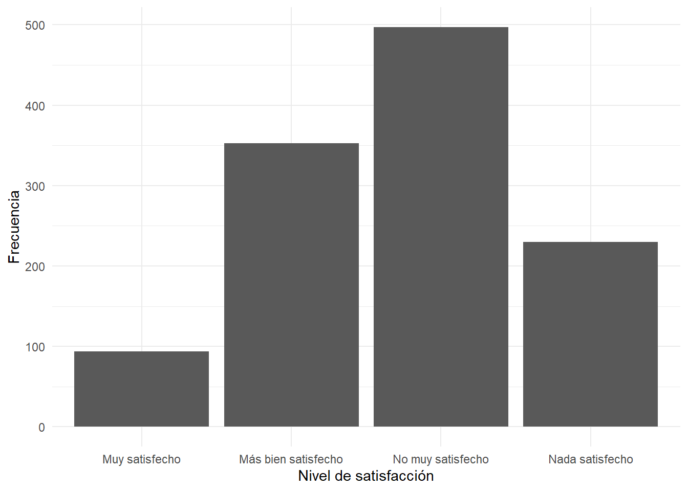

Desde la elección de Jair Bolsonaro en Brasil en 2018, América Latina y particularmente Argentina han experimentado transformaciones políticas y sociales marcadas por una creciente polarización y el surgimiento de discursos críticos hacia las instituciones tradicionales. Este proceso alcanzó un punto significativo en las elecciones presidenciales argentinas de 2023, donde Javier Milei resultó electo presidente. Tal como señala (Tedesco 2025) “Milei es, sin duda, una figura sumamente polarizante. Desde su ascenso en la política argentina, Milei se ha caracterizado por su fuerte retórica populista, sus propuestas económicas radicales y su estilo confrontativo, todo lo cual ha contribuido a una creciente polarización política”.
Diversos estudios han evidenciado un deterioro en la legitimidad de la democracia y una creciente insatisfacción ciudadana con su funcionamiento. En este contexto, resulta relevante analizar cómo se distribuye la satisfacción con la democracia en Argentina durante 2023 y de qué manera esta varía según características sociodemográficas de la población.
La satisfacción con la democracia constituye un indicador relevante para comprender el contexto sociopolítico en el que emergen discursos antisistema y liderazgos críticos de las instituciones democráticas tradicionales, como el de Javier Milei.
Justificación
La relevancia de esta investigación radica en comprender cómo distintos sectores de la población argentina evalúan el funcionamiento de la democracia en un contexto marcado por crisis económicas recurrentes, inflación sostenida, incertidumbre social y creciente desafección política.
En este marco, estudiar la satisfacción con la democracia permite aproximarse a las percepciones ciudadanas sobre la legitimidad del sistema democrático y observar cómo estas se distribuyen según variables sociodemográficas como edad, sexo y nivel educativo.
Asimismo, el estudio resulta pertinente considerando el contexto político argentino de 2023, marcado por el ascenso de Javier Milei y la consolidación de discursos críticos hacia las instituciones políticas tradicionales. En este sentido, la satisfacción con la democracia se aborda como un indicador útil para comprender el escenario social y político en el que emergen este tipo de liderazgos.
¿Cómo se distribuye la satisfacción con la democracia según variables sociodemográficas (edad, sexo y nivel educativo) en Argentina (2023)?
Hipotesis
La satisfacción con la democracia se distribuye de manera diferenciada según variables sociodemográficas (edad, sexo y nivel educativo) en Argentina (2023).
Variables
A partir de la retroalimentación recibida en la última entrega, se decidió ajustar la operacionalización de las variables con el fin de fortalecer la coherencia entre la pregunta de investigación, las variables analizadas y las técnicas estadísticas utilizadas. En consecuencia, se optó por mantener únicamente las variables que responden de manera directa al objetivo del estudio: edad, sexo y nivel educativo como variables independientes, y satisfacción con la democracia como variable dependiente.
Variables independientes
Edad (EDAD): Es una variable de intervalo o razón, pues es numérica y permite establecer orden y distancia entre los valores observados. Corresponde a la edad declarada por el encuestado al momento de la entrevista y se encuentra registrada directamente en la base de datos.
Sexo (SEXO): Es una variable nominal dicotómica que clasifica a los encuestados según sexo. En la base de datos se encuentra codificada como 1 = Hombre y 2 = Mujer.
Nivel educativo (S11): Corresponde al máximo nivel educativo alcanzado por el encuestado. Se trata de una variable ordinal, ya que sus categorías representan distintos niveles de escolaridad que pueden ordenarse jerárquicamente según el grado de educación alcanzado. La codificación va desde 1 = Sin estudios hasta 17 = Estudios técnicos superiores completos, incluyendo distintos niveles de educación primaria, secundaria, universitaria y técnica.
Variable dependiente
Satisfacción con la democracia (P11STGBS.A): Es una variable ordinal que mide el grado de satisfacción de los encuestados con el funcionamiento de la democracia en su país. Sus categorías se encuentran ordenadas desde niveles altos de satisfacción hasta niveles altos de insatisfacción. La variable se codifica como 1 = Muy satisfecho, 2 = Más bien satisfecho, 3 = No muy satisfecho y 4 = Nada satisfecho. En consecuencia, valores más altos indican una menor satisfacción con el funcionamiento de la democracia.
# CARGA DE BASE (HIPO)base_2023 <-read_delim("../input/data/Latinobarometro_2023_Argentina_Csv_esp_v1.csv",delim =";")
Warning: One or more parsing issues, call `problems()` on your data frame for details,
e.g.:
dat <- vroom(...)
problems(dat)
Rows: 1200 Columns: 299
── Column specification ────────────────────────────────────────────────────────
Delimiter: ";"
chr (1): WT
dbl (298): NUMINVES, IDENPA, NUMENTRE, REG, CIUDAD, TAMCIUD, COMDIST, EDAD, ...
ℹ Use `spec()` to retrieve the full column specification for this data.
ℹ Specify the column types or set `show_col_types = FALSE` to quiet this message.
La muestra analizada está compuesta por 1.174 casos válidos para las variables edad y nivel educativo. La edad promedio de los encuestados es de 42,9 años, con una desviación estándar de 16,9 años, lo que indica una distribución etaria relativamente amplia. Los participantes tienen edades comprendidas entre los 18 y los 90 años.
Por su parte, el nivel educativo presenta un promedio de 12,8 puntos en la escala utilizada por Latinobarómetro, con una desviación estándar de 3,2 puntos. El rango observado abarca desde la categoría 1 (sin estudios) hasta la categoría 17 (estudios técnicos superiores completos), lo que evidencia una importante heterogeneidad en los niveles educativos presentes en la muestra.
Variables categóricas
datos_satisfaccion_democratica %>%mutate(sexo =case_when( sexo ==1~"Hombre", sexo ==2~"Mujer" ) ) %>%count(sexo) %>%mutate(porcentaje =round(n /sum(n) *100, 1) ) %>% knitr::kable()
sexo
n
porcentaje
Hombre
566
48.2
Mujer
608
51.8
La muestra presenta una distribución equilibrada por sexo. Del total de casos analizados, el 51,8% corresponde a mujeres y el 48,2% a hombres. Esta distribución reduce el riesgo de sesgos derivados de una sobrerrepresentación de alguno de los grupos y permite realizar comparaciones entre ambos sexos en condiciones relativamente equivalentes.
La distribución de la satisfacción con la democracia muestra un predominio de evaluaciones negativas respecto de su funcionamiento en Argentina durante 2023. La categoría más frecuente corresponde a los encuestados no muy satisfechos (42,3%), seguida por quienes se declaran más bien satisfechos (30,1%). Por su parte, un 19,6% señala estar nada satisfecho, mientras que solo un 8,0% manifiesta estar muy satisfecho con el funcionamiento de la democracia.
En términos generales, los resultados sugieren una percepción crítica de la democracia entre los encuestados, ya que más del 60% de la muestra se concentra en categorías de insatisfacción. Este hallazgo resulta consistente con el contexto político y social argentino de 2023, caracterizado por elevados niveles de incertidumbre económica, polarización política y cuestionamientos hacia las instituciones tradicionales.
datos_satisfaccion_democratica %>%mutate(satisfaccion_democracia =factor( satisfaccion_democracia,levels =c(1, 2, 3, 4),labels =c("Muy satisfecho","Más bien satisfecho","No muy satisfecho","Nada satisfecho" ) ) ) %>%ggplot(aes(x = satisfaccion_democracia) ) +geom_bar() +labs(x ="Nivel de satisfacción",y ="Frecuencia" ) +theme_minimal()

Distribución de la satisfacción con la democracia en Argentina (2023)
La distribución de frecuencias muestra que la categoría más frecuente es “No muy satisfecho”, seguida por “Más bien satisfecho”. En contraste, las categorías extremas presentan una menor proporción de casos, especialmente “Muy satisfecho”. Estos resultados sugieren una evaluación predominantemente crítica o moderadamente negativa respecto del funcionamiento de la democracia entre las personas encuestadas.
Tedesco, Laura. 2025. “Raúl Alfonsín’s Government: The Beginning of Political Polarization in Argentina.”Journal of World Affairs 1 (1): 78–93. https://doi.org/10.1177/29769442251325357.